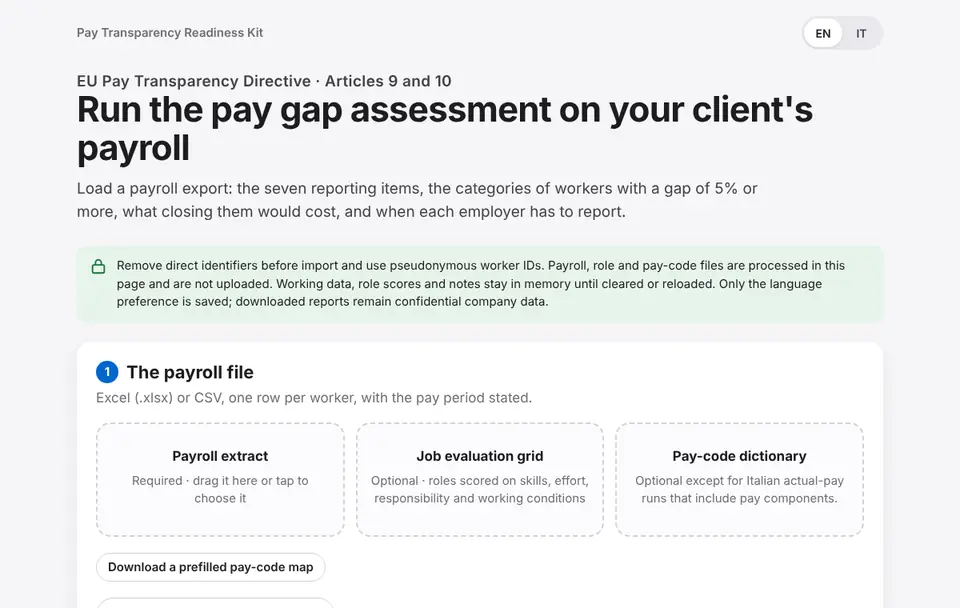

Un datore di lavoro in quattro paesi è pronto per la direttiva sulla trasparenza retributiva?
Cliente: Un datore di lavoro sintetico con 3.443 lavoratori in Italia, Polonia, Germania e Spagna, alla vigilia del primo rapporto sul divario retributivo previsto dalla Direttiva (UE) 2023/970.
Quando dobbiamo riferire, cosa diranno i numeri, quanto possiamo fidarci e come appariranno accanto ai dati nazionali?

Cosa ho fatto
- Ho calcolato i sette indicatori dell'articolo 9 e la verifica dell'articolo 10 per ogni datore di lavoro e categoria, con categorie da una valutazione dei ruoli neutra rispetto al genere, confrontata con le linee guida UE.
- Ho verificato la soglia contro una verità nota: le stesse paghe ricostruite senza i due meccanismi discriminatori inseriti nei dati, con un intervallo bootstrap e una scomposizione esatta di ogni divario.
- Ho ripetuto tutto su un anno intero di retribuzioni effettivamente pagate, con chi è uscito e chi è entrato, e ho messo ogni datore di lavoro accanto ai dati Eurostat nazionali e di settore.
- Ho consegnato un modello Excel con formule vive e un registro delle giustificazioni, una presentazione per il consiglio, una risposta all'articolo 7 in italiano e inglese e uno strumento nel browser che lavora sul file paghe senza che esca dal computer.
Cosa ha trovato
- A parità di ruolo il divario è di circa il 2% in ogni datore di lavoro, e scompare togliendo i meccanismi inseriti: troppo piccolo per vederlo categoria per categoria, chiaro datore per datore.
- Su un anno intero le categorie segnalate sono 15 invece di 12; le 7 nuove erano già indicate come vicine alla soglia. 7 delle 15 dipendono solo dalla retribuzione annua, che si muove con il turnover.
- Rispetto a Eurostat, Milano e Cracovia hanno un divario triplo di quello nazionale ma normale per i settori a cui somigliano; Barcellona è sopra tutti.
Con dati reali
- Un anno solare con lo storico delle retribuzioni, invece delle paghe attuali applicate ai dodici mesi.
- In Italia, i livelli del contratto collettivo come categorie di partenza (D.lgs. 96/2026, art. 4).
- Un incontro di giustificazione per ogni riga del registro, prima di mettere a budget il costo.
Come è verificato. 547 cifre riconciliate tra le formule Excel e pandas, ricalcolate da LibreOffice nella CI; lo strumento verificato su 5.009 valori; ogni affermazione legale e statistica in un registro con la sua fonte.
Dati sintetici o pubblici; non è consulenza legale, retributiva o finanziaria. Cifre pubblicate il 25 novembre 2026. Domenico Perroni · consulenza HR, people analytics, retribuzioni · Kraków · d0m3n1c0x.github.io